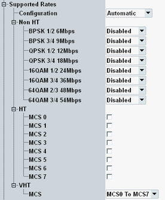

This section defines which modulation/ coding/ data rates are supported by the simulated entity and which rates must be supported by the tested entity.

To define the rates, set "Configuration" to "User Defined" and configure the entries. Which entries are available, depends on the selected standard.
For "Configuration" = "Automatic", the remaining settings have no effect.
Remote command:"Disabled" means that the rate is not supported by the simulated entity. "Mandatory" and "Optional" mean that the rate is supported by the simulated entity and must / can be supported by the tested entity.
According to the 802.11 standard, a station must not associate with an AP if it cannot receive and transmit at all mandatory rates.
See also Table "OFDM transmission schemes: coding rate (MCS value)".
Remote command: